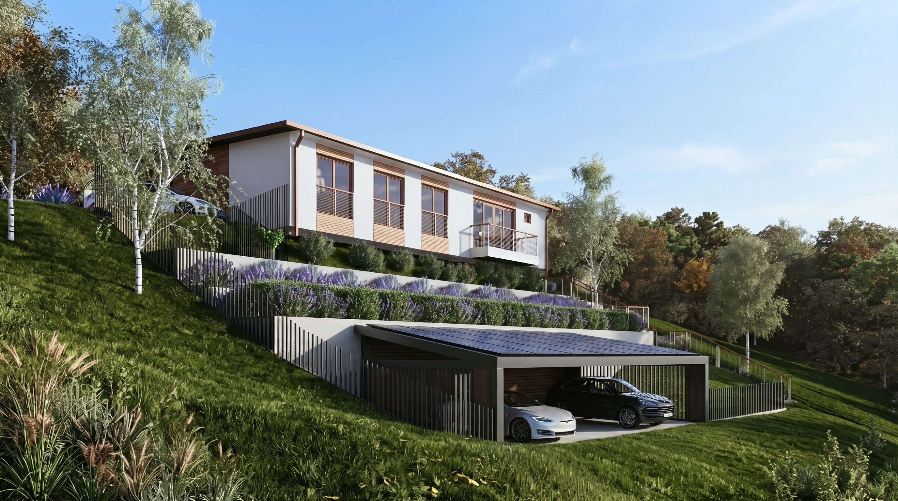

Projektni biro VUJČIN vodi Nataša Vujčin, inženjer sa više od 15 godina iskustva u projektovanju porodičnih kuća, luksuznih vila i administrativnih procedura na teritoriji Novog Sada i cele Srbije.

Naša priča i filozofija
Kada gradite kuću, ne angažujete samo nekoga da iscrta zidove u softveru. Angažujete partnera koji će zaštititi Vaš novac od nepotrebnih izvođačkih grešaka, Vaše živce od lutanja po šalterima, i osigurati da svaki kvadrat funkcioniše savršeno decenijama unapred.
Nakon diplomiranja na Univerzitetu u Novom Sadu (Građevinski fakultet u Subotici), Nataša Vujčin je posvetila proteklih 15 godina razvoju prepoznatljivog pristupa: spoju rigorozne konstruktivne logike i savremene stambene estetike.
Posebnu specijalnost biroa predstavlja 100% digitalni radni tok za klijente iz dijaspore (Nemačka, Austrija, Švajcarska). Razvili smo sistem gde investitor iz Frankfurta ili Ciriha dobija kompletnu građevinsku dozvolu, nadzor i gotov objekat bez ijednog obaveznog putovanja u Srbiju.
Preko deceniju i po uspešnog rešavanja najzahtevnijih urbanističkih i inženjerskih izazova u Srbiji.
Svi projekti se izrađuju u strogoj saglasnosti sa Zakonom o planiranju i izgradnji i CEOP standardima.
Od prvog pregleda parcele i lokacijskih uslova, do ključa u bravi i upotrebne dozvole.
U maju 2026. godine, vodeći privredni portal eKapija izvestio je o planiranoj izgradnji i proširenju proizvodnog kompleksa u Budisavi (Grad Novi Sad), gde je kompletnu dokumentaciju za lokacijske uslove i urbanističku koordinaciju izradio Projektni biro VUJČIN. Ova referenca potvrđuje stručnost biroa na kompleksnim institucionalnim i komercijalnim poduhvatima.
Zakažite besplatnu konsultaciju o Vašoj parceli, budžetu i mogućnostima gradnje. Odgovaramo u roku od jednog radnog dana.